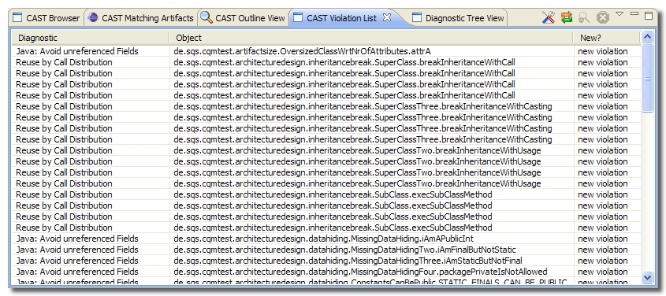

CAST Violation List
The CAST Violation List simply lists all the violations that have been
fetched from the CAST Dashboard Service:

The following buttons are available:
|
|
This button launches the Fetching
Parameters dialog box in which you can create a filter to fetch only
certain violations from the CAST CAST Dashboard Service. |
 |
This button allows you to manually fetch
violations from the CAST Dashboard Service. When clicked, Eclipse will connect to the
CAST Dashboard Service via the web service and fetch the violations. If you have already
fetched the violations, any new violations stored in the CAST Dashboard
Service
(for example following an overnight code analysis and snapshot generation
process) will also be displayed along with any existing violations.
Note also that if you have a violation filter defined in the Fetching
Parameters dialog box (accessed using the
button),
then ONLY violations matching those criteria will be fetched. |
 |
Clicking this button when a violation is
selected in the CAST Violation List that concerns a Java object will
display the corresponding Java object source code at the beginning of the
declaration within the Eclipse environment. See section "Double click to view code"
below for more information about this. The object will also be
highlighted. In addition, the CAST Outline View
will be populated with information regarding the highlighted object
(violated Quality Rule, corresponding metric etc.). Focus will also be placed on the
CAST
Matching Artifacts view.  Notes Notes
- Note that the display of code and object highlighting is only available with
Java code. The violations related to technologies other than Java will appear in
grey to indicate that double-click is not available for this violation.
- Only the Java files present in your current workspace will be opened
automatically. When the source code is not present a message will ask you to add
the relevant source code to your workspace.
|
|
|
This button enables you to remove a violation
from the list. However, the violation is not removed from the CAST Central
and will reappear in the CAST Violation List if you manually fetch the
violations using the
button. |
Double click to view code
Double clicking a violation in the CAST Violation List that concerns a
Java object (see below for a list of supported object types) will display the corresponding Java object source code at the
beginning of the declaration within the Eclipse environment. The object will
also be highlighted.
In
addition, the CAST Outline View will be populated
with information regarding the highlighted object (violated Quality Rule,
corresponding metric etc.). Focus will also be placed on the
CAST
Matching Artifacts view.
Notes
- Note that the display of code and object highlighting is only available with
Java code (see below for a list of supported object types). The violations related to technologies other than Java will appear in
grey to indicate that double-click is not available for this violation.
- Only the Java files present in your current workspace will be opened
automatically. When the source code is not present a message will ask you to add
the relevant source code to your workspace.
Supported object types for code viewing
The following object types are supported for the code viewing feature, i.e.
it is only possible to view the source code of the following object types that
are in violation:
- Java Class
- Java Method
- Java
Interface
- Java Field
- Java
Constructor
- Java
Initializer
- Java Import
- J2EE Scoped
Bean
- Java Enum
- Java
Package
Column information
The CAST Violation List includes various different column headings, these are
explained in more detail below:
|
Quality Rule |
Displays the name of the CAST Quality Rule that has
been violated.
This is a default column and cannot be removed. |
|
Object |
Displays the name of the object that has
violated a CAST Quality Rule.
This is a default column and cannot be removed. |
|
Critical |
Indicates whether the violation is critical or
not. |
|
Application |
Displays the name of the parent application
that the faulting object belongs to. |
|
Module |
Displays the name of the parent module that
the faulting object belongs to. |
|
Object Type |
Displays the type of object, e.g. Java Method,
Java Class etc. that has violated the CAST Quality Rule. |
|
Comment |
Displays the comment applied to the violation.
This can be used as a indication of priority. |
|
New? |
Displays the status of the violation, i.e. is it
new, old etc. The following values are possible:
- added
- deleted
- updated
- unchanged
|
Right click shortcut menu
The CAST Violation List has a right click short cut menu. The following is an
explanation of each option:
|
View Code |
This option is available when a violation is
selected in the CAST Violation List that concerns a Java object. The
corresponding Java object source code will be displayed within the Eclipse
environment at the beginning of the declaration. See section "Double click to view code"
above for more information about this. The object will also be
highlighted. In addition, the CAST Outline View
will be populated with information regarding the highlighted object
(violated Quality Rule, corresponding metric etc.). Focus will also be placed on the
CAST
Matching Artifacts view. |
|
Remove Violation |
This option enables you to remove a violation
from the list. However, the violation is not removed from the CAST Dashboard
Service and will reappear in the CAST Violation List if you manually fetch the
violations using the
button. |
|
Choose Columns |
This option enables you to select the columns
that are displayed in the CAST Violation List. The following dialog box will
be displayed enabling you to add or remove columns:
Selecting the checkbox next to a column will display it and clearing the
checkbox will remove the column from the CAST Violation List.
Notes
- Note that the Object and Quality Rule columns are not
available. This is because they are default columns and are always
displayed in the CAST Violation List.
|